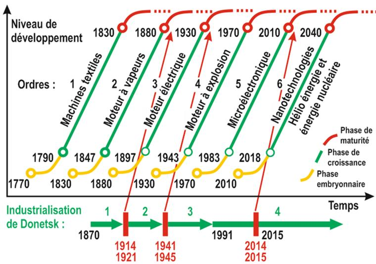
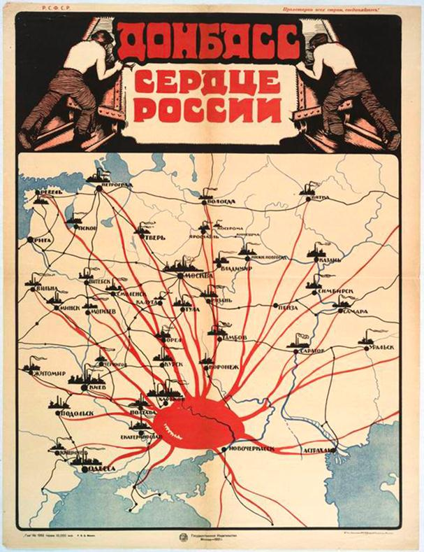

Pour les 150 ans de son développement industriel, le Donbass a passé par plusieurs stades séparés par les guerres qui étaient catastrophiques pour la population et l'industrie de la région. Mais chaque fois, comme l'oiseau légendaire le Phénix, le Donbass se régénérait et commençait le nouveau stade de l’industrialisation. En tout on peut identifier les trois tels cycles dont les limites correspondent à la Première Guerre mondiale, à la Seconde Guerre mondiale et aux troubles sociaux et civils. L’objectif principal de cette publication est de présenter une analyse brève des particularités des précédents stades de l’industrialisation et de définir préalablement les contours de la quatrième industrialisation à venir, dont l’actualité est définie par la crise provoquée par la guerre civile en Ukraine et par les nouvelles possibilités technologiques du monde contemporain.
Actuellement la guerre est revenue au Donbass. Et de nouveau, les questions concernant les voies de développement à suivre et l’avenir de la région industrielle classique, dans les conditions revenues de ravages de la guerre face à la grande usure et l’obsolescence des capitaux fixes, sont redevenues d’actualité. Au cours des dernières années la popularité augmentée des idées de développement postindustriel a obligé de poser la question : Y a-t-il un avenir dans le Donbass ? La réponse principale : oui ! Si, bien sûr, en profitant de tous les progrès des technologies modernes, du potentiel humain unique du Donbass, de l'expérience inestimable des pays européens avancés et des meilleures périodes de l'industrialisation soviétique et socialiste. Il convient également de profiter de l'expérience des régions qui, dans le monde contemporain et en relativement peu de temps, ont pu réaliser ce qu'il est convenu d'appeler le miracle économique (il s'agit de la Chine, le Japon, la Corée du Sud, la Singapour, etc.). En associant les étapes de l'industrialisation au Donbass avec les étapes mondiales de développement des technologies, il convient de noter que la région a commencé à se développer à l'ère de la vapeur et de l'acier, et chaque nouvelle étape de son développement correspond à une certaine étape de développement technologique de la civilisation.
Correspondance des étapes principales de l’industrialisation à la classification convenue des ordres technologiques
1. Première industrialisation – « de Hughes » (1870-1914)
Il y a un siècle et demi que le Bassin de Donetsk est devenu de façon inattendue pour beaucoup un leader de l'innovation et du développement industriel en Russie. Depuis 1842 l’extraction de la houille a été commencée au Donbass.
Le Donbass existant est quasi la pierre d'achoppement principale dans les relations de la Russie avec l'Occident. La situation actuelle est en grande partie similaire à la situation du milieu du XIXème siècle, lorsque la Russie est également intervenue dans un conflit dur avec l'Occident à cause de la Crimée. Une des conséquences positives de cette lutte était la transformation de la Nouvelle Russie (ndlr : le Donbass faisait la partie de cette région de l'Empire russe) dans la plus grande région industrielle. En outre, une aide décisive dans l'industrialisation des terres méridionales de l'Empire russe a été apportée par ses récents adversaires : la Grande-Bretagne et la France.
Le début pratique de la première industrialisation du Donbass peut être considéré à partir de l'été de 1870, lorsque les 8 navires transportant les équipements pour la production métallurgique sont arrivés au port de Taganrog. John HUGHES construisit alors l'usine de Société de Nouvelle Russie qui est devenue la plus grande parmi les usines similaires en Russie.
Hormis les industriels britanniques, les entrepreneurs français ont fait aussi une contribution significative à l'économie régionale en ayant organisé une société de capitaux « Société minière et industrielle ».
À la fin du XIX siècle, la nouvelle région industrielle du Donbass produisait 52 pour cent de la fonte dans le pays, tandis que l'Oural n’en produisait que 28 pour cent. Dans les usines de la Nouvelle Russie la productivité du travail étaient six fois plus élevée que dans les entreprises de l'Oural. En 1913, à la veille de la Première Guerre Mondiale, Alexandre BLOK a écrit le poème «la Nouvelle Amérique» (le cycle «la Patrie») sous l'influence des idées et des observations de Dmitri Ivanovitch MENDELEÏEV, dans lequel il chante le progrès technique au Donbass et exprime l'espoir que l'industrialisation apporte de nouvelles opportunités et donne une impulsion forte à son développement ultérieur équivalent à l’essor américain. Mais les espoirs d'un bel avenir industriel ont été malheureusement anéantis par la guerre et ses ravages concomitants pour les nombreuses années.
2. Deuxième industrialisation – « soviétique » (1921-1941)
 Affiche de 1921 où le Donbass est présenté par le cœur industriel de la RussieLe début de la deuxième industrialisation du Donbass peut être considéré à partir de 1921, lorsque la première École technique de mines ouvre ses portes à Iouzovka (ndlr : ancien nom de Donetsk) qui a été bientôt transformé en une école supérieure principale assurant tous les processus ultérieurs de l'industrialisation du Donbass. Déjà au cours de ses premières années de fonctionnement, l'école est devenue l’honneur du Donbass. Dans la presse de l'époque, il a été noté que « selon l'intensité du travail, de l'éducation et de la formation des professionnels, l’École technique municipale est sans aucun doute la meilleure école technique de la République ». Dans la même année 1921, un décret du Conseil du Travail et de la Défense de l'URSS sur la reconstruction de l'industrie houillère du Donbass a été publié. Il a été annoncé que sans la reconstruction du Donbass, l'édification du socialisme « sera un simple bon souhait ».
En 1921, un des événements les plus importants a été l’essayage de la première locomotive électrique de mine dans la mine de Lidievka, ce qui signifiait le début de l'ère de l'utilisation industrielle de moteurs électriques et, en fait, la transition à un nouvel ordre technologique. En 1924, il a été effectué le premier achat du lot de locomotives électriques en France qui ont bien montré son efficacité aux mines de Routchenkov. Dans la même année la production de locomotives électriques a été lancée à l’usine de Kramatorsk. Dans les dix ans, la production nationale de locomotives électriques devenant suffisante, leur importation a été complétement suspendue. Dans ces années, ont été commencées la mécanisation et l'électrification complètes de tous les processus de production, permettant d’augmenter considérablement la productivité et d’initier le Stakhanovisme en 1935. Dans l'industrie houillère, le facteur humain a été intensifié très efficacement par des moyens relativement simples et peu coûteux tels que la création du culte du fer de lance et de l’innovateur de la production.
Si en 1931 Staline a déclaré « nous sommes coupés des pays avancés de 50 à 100 ans et nous devrons avoir passé cette distance dans 10 ans », en 1941, le volume de la production industrielle de l'Union soviétique occupe alors la deuxième place dans le monde après les Etats-Unis. Dans ces processus le Donbass jouait un des rôles clés et était prêt à continuer d’intensifier les rythmes de l’industrialisation. Mais encore une fois, la nouvelle guerre a détruit près de 90 % du potentiel industriel de la région.
3. Troisième industrialisation – « socialiste » (depuis 1944)
En 1944, après la libération du Donbass, sa reconstruction sur de nombreux points a été recommencée pratiquement à partir de zéro. Mais le redressement du Donbass sera aussi rapide qu’efficace, ce qui permettra d’atteindre un rythme de développement record, selon une série d'indices, dès le début des années 50.
Toutefois, au début des années 70 le rythme de développement a commencé à baisser de façon spectaculaire – face aux crises mondiales, le Donbass et l'ensemble des pays sont entrés dans une période de « catharsis » et de trêve pour préparer le sursaut suivant, qui dût avoir lieu au début des années 90 sur la base de la transition à l'industrie de la microélectronique, aux nouveaux matériaux, au réseautique et d'autres nouvelles technologies.
Mais la désintégration catastrophique de l'Union Soviétique au début des années 90 a de nouveau arrêté abruptement les processus de développement industriel. Le Donbass en Ukraine s’est trouvé encore une fois au seuil d'une crise catastrophique. Depuis 1991 le pays ne s’est non seulement pas développé, mais a perdu un tiers de l'économie nationale, principalement dans son industrie la plus précieuse – celle de de la construction mécanique.
Avant l'événement de 2014, toute l'économie de l'Ukraine ne faisait qu’environ 180 milliards de dollars. Pour exemple, la recette annuelle d’une seule société IBM avec quatre cent mille employés fait 100 milliards de dollars. Les Ukrainiens gagnaient très peu parce que la productivité du travail en Ukraine était deux fois inférieure à la Russie, trois fois inférieure à la Biélorussie, quatre fois inférieure à l’Union européenne et six fois inférieure aux États-Unis. La composante de l'innovation de l’économie ukrainienne est estimée à moins de 4 %. Là encore pour exemple : au Nicaragua moins de 5 %, en Chine près de 28 % et, à Singapour 50 %. En cela, la consommation des ressources (on peut dire, la consommation des ressources naturelles) de l'économie ukrainienne demeure bien plus élevée que dans les pays matures. Les événements de 2014 ont eu à l'origine des conséquences encore plus catastrophiques pour l'économie, ce qui en 2015 a conduit les nombreux analystes face à « l’europtimisme » de l’autorité ukrainienne de Maïdan à ne pas penser au développement industriel mais aux perspectives sombres de l’agrocolonialisme.
Pour de telles régions traditionnellement industrielles comme le Donbass la perspective de l’agrocolonialisme est complétement inacceptable. Il est bien naturel de chercher des alternatives. En tenant compte la transition venue à point à un nouvel ordre technologique basé sur les nanotechnologies, les sources d'énergie alternatives et la formation de «l’environnement intelligent», une telle recherche pour le Donbass peut être très productive.
4. Quatrième industrialisation du Donbass – depuis 2015
En fait, toutes les conditions pour la quatrième industrialisation du Donbass sont arrivées à maturité, qui, lors de la formation d'un nouvel ordre technologique avec la bonne approche à son organisation, peut être extrêmement efficace, surtout face à ses précédentes décennies de stagnation industrielle. Une bonne mise en œuvre de la nouvelle industrialisation basée sur les plus récentes réalisations technologiques et l'enthousiasme de la population de Donbass passée par de rudes épreuves, permet fournir à la région un « second souffle » et découvrir les nouvelles perspectives valables. Avec une approche raisonnable, le Donbass a toutes les chances de devenir un leader de l'industrialisation dans l'espace post-soviétique.
4.1 Néo-industrialisation et ses critères humanitaires
La nouvelle industrialisation ou, comme on l'appelle ces derniers temps, la néo-industrialisation doit avoir essentiellement le caractère humaniste et être évaluée sur la base de tels critères complexes internationaux élaborés à cette dernière décennie comme l’Indice de développement humain et les indices similaires. Parallèlement, il est avantageux d'utiliser d’autres indices de développement : de l’Indicateur Véritable de Progrès (Genuine Progress Indicator, le GPI), remplaçant tel indice comme le PIB dans les conditions contemporaines, aux indices informels comme les différents indices de bonheur.
On espère que le XXIe siècle sera le siècle de non seulement de la high-tech - des hautes technologies dans l’industrie, dans l'agriculture et dans le domaine militaire mais aussi le siècle de haute-hume – des hautes technologies humanitaires visant le développement et l'utilisation efficace des possibilités des individus et des équipes. En cela, «apprendre à apprendre», «apprendre à poser correctement les questions et à fixer des objectifs» sont plus important que de donner un certain ensemble de connaissances et de compétences professionnelles, qui peuvent très vite perdre sa valeur.
4.2 Nooindustrialisation et nooéconomie
En raison du fait que la notion de la néo-économie (comme la nouvelle économie) est trop générale et imprécise, donc à ce stade de développement, il est plus adapté d'utiliser les notions spécifiques comme nooindustrialisation et nooéconomie, formées sur la base de la racine grecque « noos » (la conscience) et mettant en avant « la rationalité » de la technosphère moderne et de l'économie fondée sur elle.
Dans ce contexte, un intérêt particulier présente « Industrie 4.0 » – le concept de la nouvelle révolution industrielle qui relève à un niveau fondamentalement nouveau les réalisations des trois révolutions précédentes liées au moteur à vapeur, à la production de masse et à l'automatisation.
Dans le cadre de ce nouveau concept, dont le début de la mise en œuvre massive est considéré depuis 2015, on suppose l'intégration de phénomènes de « l'Internet des objets » (Internet of Things, IoT), les nouvelles technologies de la communication entre machines (Machine to Machine, M2M) et les soi-disant systèmes cyberphysiques.
Une composante importante de « Industrie 4.0 » est également les possibilités entièrement nouvelles qui sont ouvertes grâce à l'utilisation massive de 3D-imprimantes. Les nouvelles technologies dans le cadre de « Industrie 4.0 » sont capables de changer radicalement les éléments traditionnels de l’environnement technique, non seulement augmentant considérablement leur efficacité, mais aussi assurant le développement presque continue. En général, le concept de « Industrie 4.0 » peut être considéré comme une démonstration de la tendance plus générale liée à l’intellectualisation accélérée de toute la technosphère.
4.3 « Croissance verte »
Un autre concept de production de la nouvelle industrialisation est une « Croissance verte », envisageant le développement le plus écologique basé sur les nouvelles technologies et les sources d'énergie renouvelable. Ainsi, on ne refuse pas de sources d'énergie traditionnelle, mais assure l’augmentation de leur efficacité et de leur performance environnementale.
Le succès des premières étapes dans la mise en œuvre de la « croissance verte » a prouvé la possibilité et la pertinence d'une telle stratégie, y compris pour telles régions industrielles classiques comme le Donbass.
Un des exemples les plus parlants de possibilités entièrement nouvelles dans le cadre de la « croissance verte » est le changement observé actuellement dans l'augmentation de l'efficacité de l'énergie solaire. Le développement technologique entraîne non seulement une diminution constante du coût de l'énergie solaire, mais accélère l’approche de la parité réseautique au cours des dernières années. En cela, il y a deux approches principales : la création de grandes centrales solaires, comme celles qui ont été lancées en Crimée ces dernières années, ou l’approche maximale des sources d'énergie aux consommateurs. Par exemple, la première approche permet idéalement d’assurer tous les besoins énergétiques de la civilisation contemporaine grâce à la couverture d’une zone relativement petite au Sahara. Mais dans ce cas la question de la livraison efficace aux consommateurs reste ouverte. L’approche mise en œuvre en Allemagne est radicalement différente : les panneaux solaires couvrent tous les toits des maisons qui sont appropriés pour cela. En conséquence, dans les mois d'été, à partir de 2014 ces sources sont déjà capables d'assurer la livraison de plus de la moitié de l'énergie à consommer. De telles régions se trouvent, comme le Donbass, significativement plus au sud et obtiennent beaucoup plus du soleil steppique qu'en Allemagne. Par conséquent, le développement intensif de l'énergie solaire au Donbass peut être encore plus efficace, en permettant non seulement d’améliorer considérablement la situation écologique, mais d'assurer aussi l’économie de la houille afin de l’utiliser dans les cas où elle peut assurer la plus grande rentabilité économique.
Conclusions
Les opportunités technologiques modernes et l'expérience positive de trois industrialisations précédentes permettent de mettre le problème de l'industrialisation du Donbass comme le problème actuel et pratiquement réalisable dans un avenir prévisible. Donc, la reconstruction du Donbass doit être effectuée en tenant compte de tous ces opportunités et perspectives. Une mise en œuvre résolue et persistante de ces opportunités permettra de compter non seulement sur la renaissance du Donbass, mais aussi sur une nouvelle version d’un miracle économique.
Partager cette page